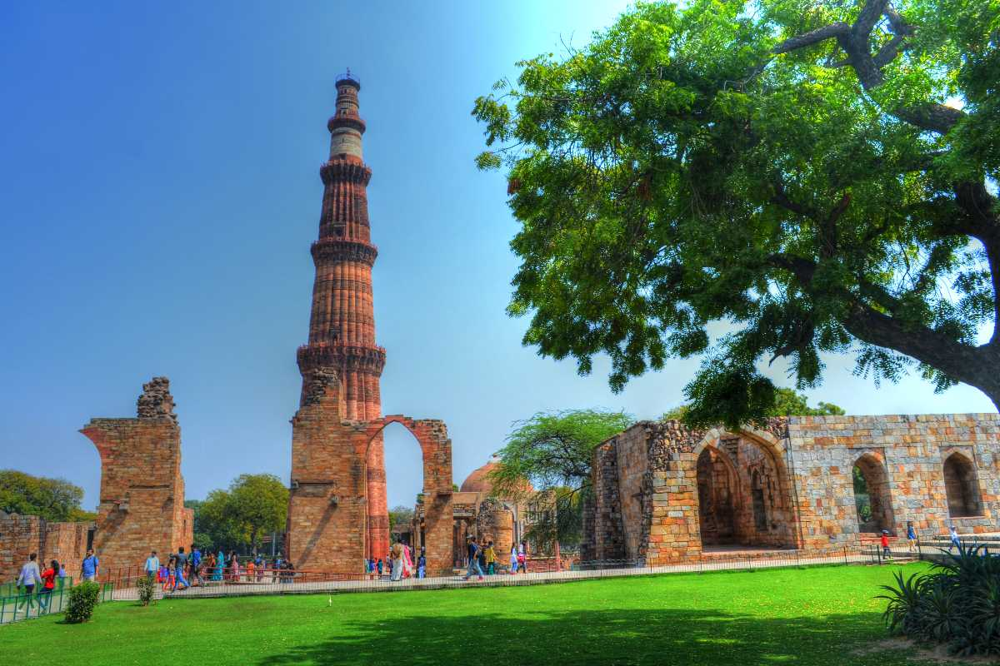

Delhi
Delhi, officially known as the National Capital Territory of Delhi (NCT), is a city and a union territory of India containing New Delhi, the capital of India. It is bordered by the state of Haryana on three sides and by Uttar Pradesh to the east. The NCT covers an area of 1,484 square kilometres (573 sq mi). According to the 2011 census, Delhi's city proper population was over 11 million, the second-highest in India after Mumbai, while the whole NCT's population was about 16.8 million. Delhi's urban area is now considered to extend beyond the NCT boundaries, and include the neighbouring satellite cities of Ghaziabad, Faridabad, Gurgaon and Noida in an area called the National Capital Region (NCR) and had an estimated 2016 population of over 26 million people, making it the world's second-largest urban area according to the United Nations. Recent estimates of the metro economy of its urban area have ranked Delhi either the most or second-most productive metro area of India. Delhi is the second-wealthiest city in India after Mumbai and is home to 18 billionaires and 23,000 millionaires. Delhi ranks fifth among the Indian states and union territories in human development index. Delhi has the second-highest GDP per capita in India. Delhi is of great historical significance as an important commercial, transport, and cultural hub, as well as the political centre of India.
Some of the important tourist attractions in Delhi are:
Humayun's Tomb
As the name suggests, Humayun's tomb is the final resting place of the Mughal Emperor Humayun. Located in the Nizamuddin East area of Delhi, it is the first garden-tomb in the Indian subcontinent. This splendid piece of architecture was commissioned for construction by Humayun's chief consort Empress Bega Begum in the year 1569-70 and is one of the very few structures that used red sandstone on such a massive scale at that time. The design of Humayun's tomb is a typical Mughal architecture with Persian influences and was conceptualised by Persian architect Mirak Mirza Ghiyath. Owing to its magnificent design and illustrious history, Humayun's Tomb was featured in UNESCO's World Heritage List in the year 1993.
The architectural genius of Humayun's tomb is hard to miss. This magnificent tomb sits in the middle of a huge, ornate Mughal Garden and its beauty is only enhanced during the winter months. Situated on the banks of the River Yamuna, this mausoleum is also home to the remains of many other Mughals, including his wives, son and descendants of the later Emperor Shah Jahan, as well as numerous other subsequent Mughals.
Hauz Khas Village
An affluent neighbourhood in South Delhi, Hauz Khas has been well known since medieval times. Hauz Khas Village retains the old charm of the place with remnants of Islamic architecture roughly coloured by splotches of urbane refurbished upmarket. 'HKV' is known for its electric nightlife with countless cafes, bars and pubs along with art galleries, and boutiques.
Hauz Khas fort is located in the middle of HKV with a reservoir and a well-maintained park with walkways. The area is dotted with domed structures which are tombs of royalties during the 14th to 16th century. The tomb of Feroz Shah Tughlak, a renowned ruler of the Tughlak dynasty, is at the end of the road.
It has an infectious energy, and you may catch a lot of live events hosted by several cafes during the weekends ranging from stand-up comedy to live jazz. Te present status of the village retains the old charm of the place along with an enhanced aesthetic appeal. No matter whether you are a Delhiite of not, you eventually find yourself at the most happening place in the city.
Qutab Minar
Qutub Minar is a minaret or a victory tower located in Mehrauli area of Delhi. With the height of 72.5 metres (238 ft), the UNESCO World Heritage Site of Qutub Minar is the second tallest monument of Delhi. Its construction was started in 1192 by Qutb Ud-Din-Aibak, founder of Delhi Sultanate after he defeated the last Hindu Ruler of Delhi. He constructed the basement, after which the construction was taken over by his son-in-law and successor Iltutmish who constructed three additional stories. The fourth and fifth storeys were built by Firoz Shah Tuglak.
The tower has five distinct storeys, each marked by a projecting balcony and tapers from a 15 m diameter at the base to just 2.5 m at the top. The first three storeys are made of red sandstone; the fourth and fifth storeys are of marble and sandstone. At the foot of the tower is the Quwwat-ul-Islam Mosque, the first mosque to be built in India. An inscription over its eastern gate provocatively informs that it was built with material obtained from demolishing '27 Hindu temples'. A 7 m-high iron pillar stands in the courtyard of the mosque. It is said that if you can encircle it with your hands while standing with your back to it your wish will be fulfilled.
The origins of Qutab Minar are shrouded in controversy. Some believe it was erected as a tower of victory to signify the beginning of the Muslim rule in India. Others say it served as a minaret to the muezzins to call the faithful to prayer.
National Zoological Park
Inaugurated in 1959, National Zoological Park also known as Chidiya Ghar is situated near The Old Fort in Delhi and is a favourite weekend spot among adults and children alike. National Zoological Park is well maintained and is largely visited by tourists. It has canteens inside for the visitors and battery-operated vehicles at very reasonable prices which you could use if exhausted. But the real fun is in exploring the place on your feet. Visit this destination to reignite your curiosity in our furry friends!
From biggest cats to the tiniest birds, the zoo has all kinds of animals and birds. Initially, it was known as Delhi Zoo when in 1982 it was renamed The National Zoological Park with the idea of making it the model zoo of the country.
At the Zoological Park, birds and animals live in an environment that in many ways resemble their natural habitat. The zoo not only provides a home for endangered species but also helps them to breed in captivity. It also holds Conservation Breeding Programmes for Asiatic Lion, Royal Bengal Tiger, Brow Antlered Deer, Swamp Deer, Indian rhinoceros and red jungle fowl. Eventually, they may once again thrive in the wild.
Red Fort

The Red Fort is a historical fortification in the old Delhi area. It was the main residence of the emperors of the Mughal dynasty. Shah Jahan constructed it in the year 1939 as a result of a capital shift from Agra to Delhi. This imposing piece of architecture derives its name from its impregnable red sandstone walls. In addition to accommodating the emperors and their households, it was the ceremonial and political centre of the Mughal state and the setting for events critically impacting the region. Today, this monument is home to several museums that have an assortment of precious artefacts on display. Every year, the Indian Prime Minister unfurls the national flag here on the Independence Day.
Formerly known as Quila-e-Mubarak or the Blessed Fort, the Red Fort lies along the banks of the river Yamuna, whose waters fed the moats surrounding the fort. It was a part of the medieval city of Shahjahanabad, popularly known today as 'Old Delhi'. The entire fort complex is said to represent the architectural creativity and brilliance of Mughal architecture. With so much history and heritage associated with it, the Red Fort is one of the most popular monuments in India and a major tourist attraction in Delhi. It became a UNESCO world heritage site in 2007. The Archaeological Survey of India is at present responsible for the security and preservation of this magnificent monument.